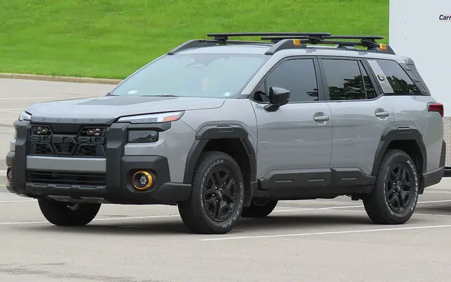

Par Motor › Precios por modelo › Subaru Outback
Precio de segunda mano · noviembre de 2026¿Cuánto vale un Subaru Outback de segunda mano?

Precio justo estimado de un Subaru Outback usado en España, año por año, con los kilómetros normales para su edad y en buen estado: de 12.700 € a 46.600 €. Para tasar el tuyo con sus kilómetros reales y su estado, usa el tasador gratis.
Precios del Subaru Outback por año
Outback IV (2009–2014)
Precio de nuevo: 2.5 167 CV, 35.000 € · 2.0 D 150 CV, 36.000 € · 3.6 260 CV, 42.000 €
| Año | Km normales | 2.5 167 CV · Gasolina | 2.0 D 150 CV · Diésel | 3.6 260 CV · Gasolina |
|---|---|---|---|---|
| 2014 | 100.000 km | 17.400 € | 17.600 € | 20.900 € |
| 2013 | 100.000 km | 16.500 € | 16.500 € | 19.800 € |
| 2012 | 100.000 km | 15.500 € | 15.400 € | 18.600 € |
| 2011 | 100.000 km | 14.500 € | 14.500 € | 17.400 € |
| 2010 | 100.000 km | 13.600 € | 13.500 € | 16.300 € |
| 2009 | 100.000 km | 12.700 € | 12.700 € | 15.300 € |
Outback V (2015–2021)
Precio de nuevo: 2.5 175 CV, 38.000 € · 2.0 D 150 CV, 39.000 €
| Año | Km normales | 2.5 175 CV · Gasolina | 2.0 D 150 CV · Diésel |
|---|---|---|---|
| 2021 | 80.000 km | 25.200 € | 23.500 € |
| 2020 | 95.000 km | 22.100 € | 23.500 € |
| 2019 | 100.000 km | 21.000 € | 23.400 € |
| 2018 | 100.000 km | 20.600 € | 23.200 € |
| 2017 | 100.000 km | 20.200 € | 23.000 € |
| 2016 | 100.000 km | 19.800 € | 21.700 € |
| 2015 | 100.000 km | 19.400 € | 20.300 € |
Outback VI (2021–hoy)
Precio de nuevo: 2.5 169 CV, 45.000 €
| Año | Km normales | 2.5 169 CV · Gasolina |
|---|---|---|
| 2026 | 5.000 km | 46.600 € |
| 2025 | 20.000 km | 40.300 € |
| 2024 | 35.000 km | 37.700 € |
| 2023 | 50.000 km | 35.400 € |
| 2022 | 65.000 km | 33.100 € |
| 2021 | 80.000 km | 29.800 € |
Kilómetros normales: 15.000 al año en gasolina, híbridos y eléctricos, y 20.000 en diésel, con un máximo de 100.000 km (por encima no tasamos: el precio depende demasiado del historial de cada coche). Cifras redondeadas a 100 €.
Preguntas frecuentes
¿Cuánto vale un Subaru Outback de segunda mano?
Según el año, la versión y los kilómetros, un Subaru Outback usado vale hoy de 12.700 € a 46.600 € en España. El más barato de nuestra tabla es un 2.0 D de 2009 (12.700 €) y el más caro un 2.5 de 2026 (46.600 €). Son precios justos estimados entre particulares y profesionales, con los kilómetros normales para su edad y en buen estado.
¿Cuánto valor pierde un Subaru Outback al año?
Con unos años encima, un Subaru Outback pierde alrededor de un 6 % de su valor cada año (calculado sobre el 2.5 de la generación Outback VI). Los primeros años la caída es mayor y a partir de los 70.000 km se acelera.
¿Qué motorizaciones tiene el Subaru Outback?
En nuestra base de datos hay versiones gasolina y diésel, en 3 generaciónes: Outback IV, Outback V y Outback VI.
¿Cómo sé si me piden demasiado por un Subaru Outback?
Abre el tasador de Par Motor, elige el Subaru Outback, el año y los kilómetros reales, y escribe lo que te piden. Te diremos si está por debajo del precio justo (chollo) o por encima (caro). Es gratis y no pide registro ni matrícula.
Otros Subaru
Compara su coste real
El precio de compra es solo una parte. Mira cuánto te costaría al mes con combustible, seguro, neumáticos, mantenimiento y lo que pierde de valor.
Abrir el comparador →